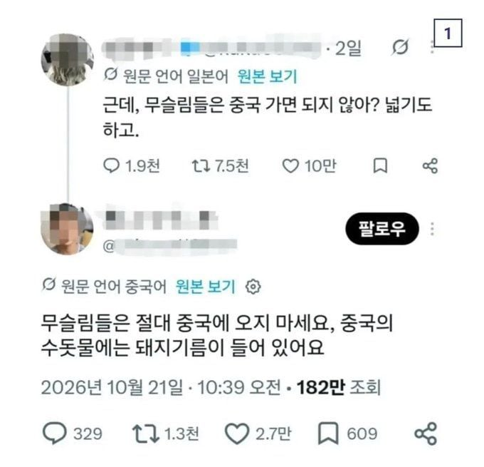
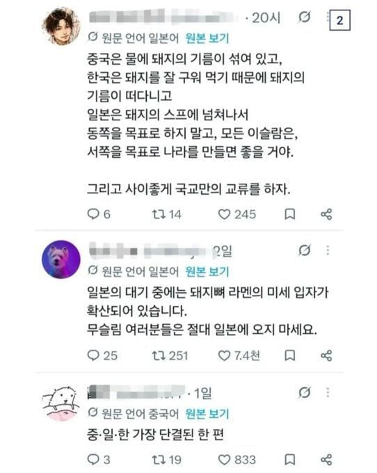
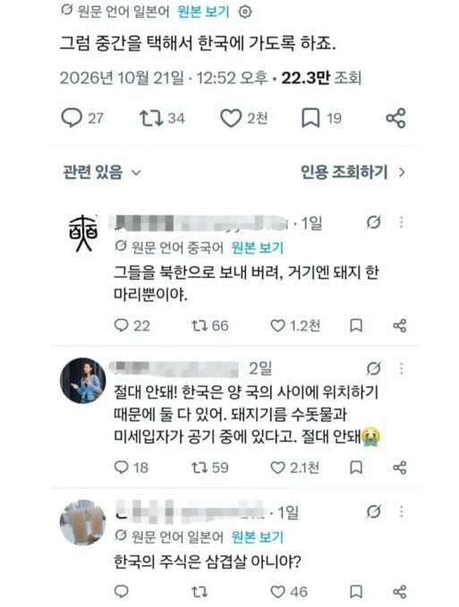
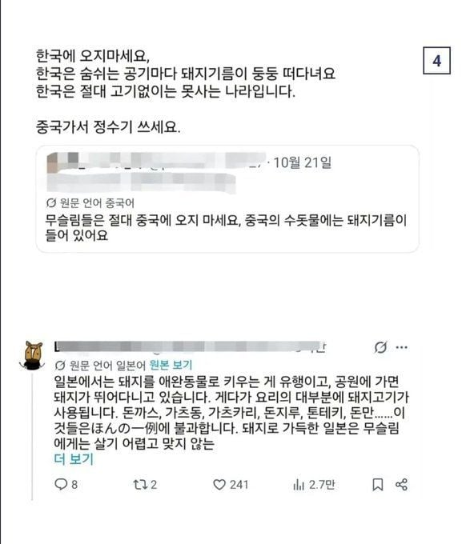
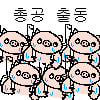

ㅋㅋㅋㅋㅋㅋㅋ
얼마 전 본 개드립 게시물 생각난다
북한에 정은이보다 돼지가 있을지 진짜 궁금해지네
북한 돼지는 지방층이 거의 없다더라 삐쩍 꼴아가지고..
그래서 탈북민들이 남한와서 삼겹살 먹으면 놀란대
이래서 공통의 적이 중요한거구나
우린 생산되는 모든 식품이 돼지고기와 같은 라인을 사용한다고 식품 포장지마다 적혀있어요. 읽어보세요
근데 중국엔 이미 수백년 전부터 이슬람 믿던 소수민족도 많음
가혹한 탄압으로 유명한 위구르족도 무슬림들임
한중일 다 돼지에 미쳤잖아
그리고 북한은 미친돼지가 있음
어....?
그럼 슬슬 수확기가....?
중국에 그 하얀모자 쓰고 다니던 이슬람 믿는 소수부족 잇다고 들엇는데
공산주의 하의 무슬림이라면 돼지고기도 잘 먹지 않을까? ...ㅋㅋㅋ
(실제로 구소련에 살았던 무슬림들은 먹는것의 제한이 거의 없다고 하더라
무슬림 전통을 고집하는 인간들은 소련 빨갱이들이 전부다 죽였다고 ... )
신장위구르?
나도 신장그쪽 생각했는데 최근 캡틴따거 중국지역티어겜한거 보니까 회족 은근 멀리 퍼져살더라.
해안가 마을쪽 말고 산간지역쪽에 널리 퍼져사는듯. 산시성 뭐 여러동네. 소수민족 인구보니까 900만 넘는다더라 ㅋㅋㅋ
결론: 이정도면 중국이 받는게 맞다.
다들 본 지역에서는 도망가야해서 그랬나...아무튼 중국 니네가 받아
ㄹㅇㅋㅋ
천하통일 ㅋㅋㅋ
어차피 한국일본은 섬이라못오니 중국으로가면되겟다
중국에도 이슬람 믿는 한족계 소수민족인 후이족이 천만명 살고 있음
무슬림이라고 해도 모든 것의 우선순위가 코란이 아니라서 그렇지
닥치는 대로 때려죽이는 공산정권하의 무슬림은 많이 세속화 되어 있더라 .... ㅋ
여기서 말하는 무슬림은 근본주의애들 말하는거겠지 거 수틀리면 무슨짓을 할지 모르는 애들
수틀러 ㄷㄷ
왜 이럴때는 잘 뭉치냐고 ㅋㅋㅋㅋㅋ
북한에 돼지 한마리 뿐이야 ㅇㅈㄹㅋㅋㅋㅋㅋㅋㅋㅋㅋㅋㅋㅋㅋㅋㅋㅋ
북한 돼지 한마리 드립은 매콤하네
나도 사실 무슬림임 슬림한것보다는 글래머가 좋음
근데 시발 난민도 기초교육하고 사회에 풀어야하는거 아니냐
난민이면 그 병신나라에서도 하층민일 가능성이 높은건데
한 5년정도 가두고 노역과 교육으로 최소 그나라 언어 규범정도는 배우게 한다음에 풀어야지
시험통과 못하면 송환이고
난민도 그거 감당 가능한 새끼만 하는거고
사이좋게 3국에 오는건 막으려는 착한 놈들도 있고 우리만 안오면 된다고 똥뿌리는 놈들도 있네ㅋㅋㅋㅋㅋㅋㅋㅋㅋ
근데 돼지굽는 냄새도 맡으면 안되는건가?
밤에 식당가 가면 고기굽는 냄새 천지인데
북에는 한마리뿐 ㅋㅋㅋ
ㅋㅋㅋㅋ 북엔 풀밖에 없지
근데 중국은 무슬림애들 진짜 사형떄려버리고 알빠노 시전할 것 같긴함
돼지 못먹을거면 걍 오지마라
꿀꿀꿀! (대충 한국에선 돼지가 개드립도 한다는 말)